5.12 Output Produced by Examples
Figure 5.1:
The output produced by example script 1, Plotting Functions - A Simple First Plot.
|
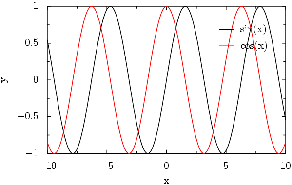 |
Figure 5.2:
The output produced by example script 2, Stacking Many Plots Together - Multiplot.
|
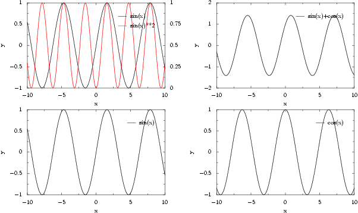 |
Figure 5.3:
The output produced by example script 3, Plotting A Datafile - Using Multiple Axes.
|
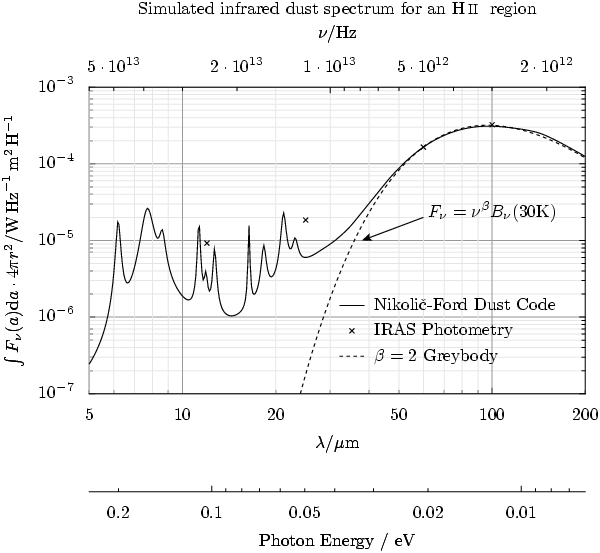 |
Figure 5.4:
The output produced by example script 4, Something Completely Different.
|
 |
Figure 5.5:
The output produced by example script 5, Multiplot - Linked Axes.
|
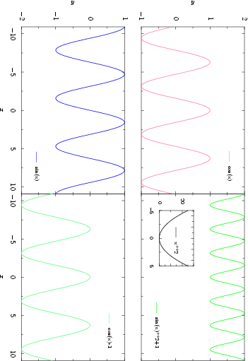 |
Figure 5.6:
The output produced by example script 6, Bar Charts and Steps.
|
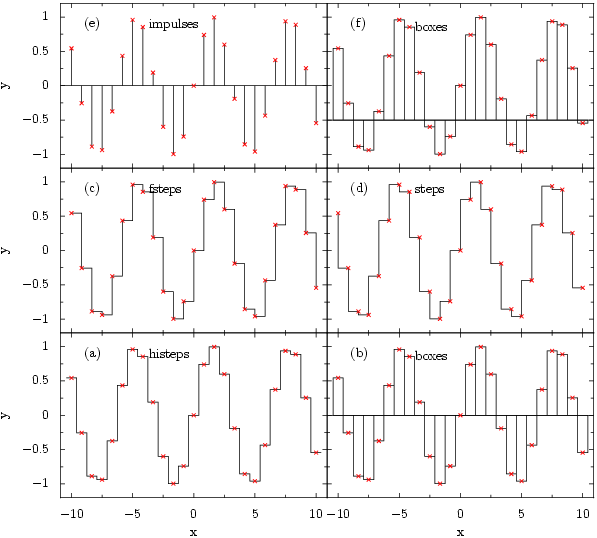 |
Figure 5.7:
The output produced by example script 7, Bar Charts - Box Widths.
|
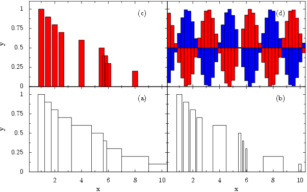 |
Figure 5.8:
The output produced by example script 8, Fitting Functions to Data.
|
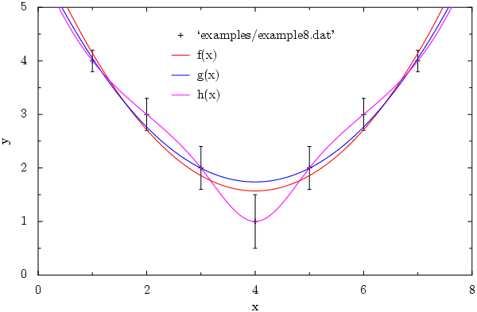 |
Figure 5.9:
The output produced by example script 9, Simple Examples of Function Splicing.
|
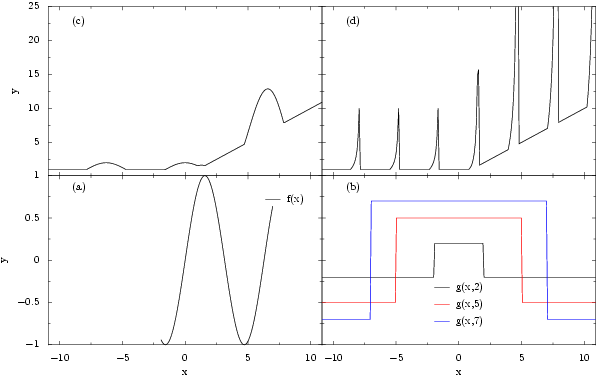 |
Figure 5.10:
The output produced by example script 10, Removal of Unwanted Axes.
|
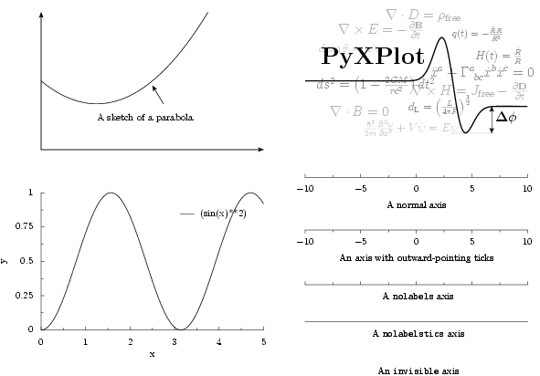 |
Figure 5.11:
The output produced by example script 11, The Arrows Plot Style.
|
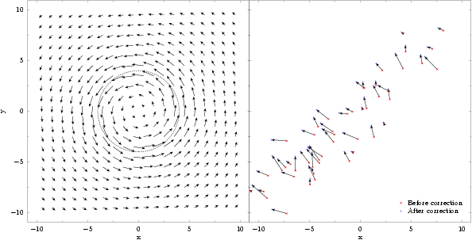 |
Dominic Ford
2006-09-09